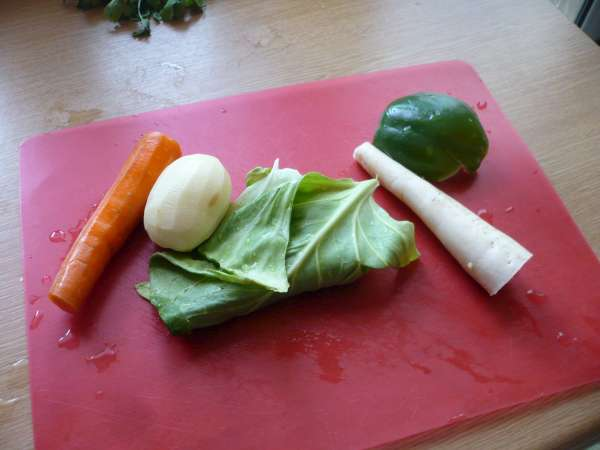

| My Base Gravy | Well Worth The Effort! | |
|---|---|---|
|  |
So, This is all you will need, plus about a dozen onions, tennis
ball size roughly chopped, and a tin of chopped tomatoes plus some
spices. - The mix powder mentioned is just your own curry powder
and can be made up of almost any spices that you favour. I would
suggest use 4 heaped teaspoons of a mild curry powder, 3 of paprika
(not smoked). 3 of turmeric, 3 of coriander powder, 2 of cumin
powder and one of garam massala. Shake them all together with a lid
on then pop them into a clean dry jar with a lid. There you have
your own 'mix powder' The white vegetable shown is a bit of mooli, which you can buy in any Asian shop and even find in supermarkets now. (It's a mild vegetable a bit like radish) |